PASC 2026
Heidelberg Institute for Theoretical Studies (HITS)
The amount of astronomical data is growing exponentially
Machine learning methods are needed to explore this amount of data
Our approach Modular open-source tools for self-supervised knowledge discovery and interactive visualization of large-scale cosmological data
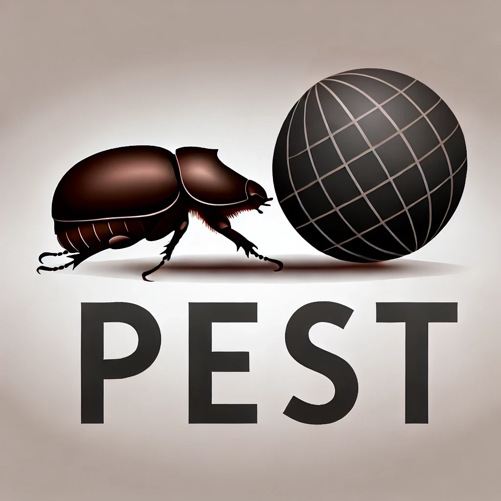
Data AcquisitionPEST preprocesses universal cosmological simulation data into multi-channel images, data cubes, and point clouds
ETL pipeline (Extract \(\rightarrow\) Transform \(\rightarrow\) Load) driven by YAML
Apache Parquet stores multi-modal data in an efficient columnar data storage
Upload to Hugging Face or Zenodo for easy sharing and integration with ML frameworks
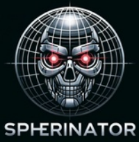
Representation LearningPolsterer et al. (2024); Doser, Polsterer, and Trujillo-Gomez (2026)
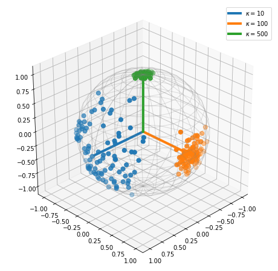
Cao and Aziz (2020)
Determine the optimal number of dimensions in the latent space by analyzing the reconstruction.
Original IllustrisTNG SKIRT SDSS images
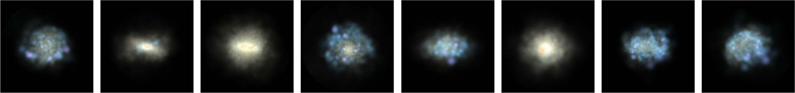
ResNet-18 autoencoder, 512 features: Sufficient reconstruction
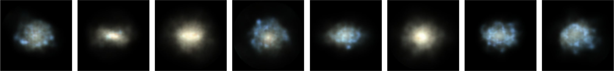
ResNet-18 VAE-S\(^{128}\): Details are present, but blurry
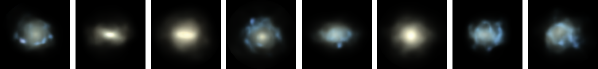
Original IllustrisTNG SKIRT SDSS images
ResNet-18 VAE-S\(^{128}\): Details are present, but blurry
ResNet-18 VAE-S\({^2}\): Details are lost, but the overall structure is preserved
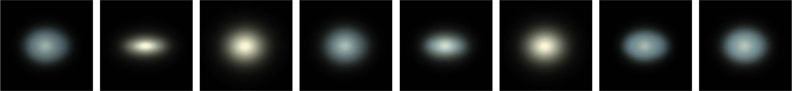
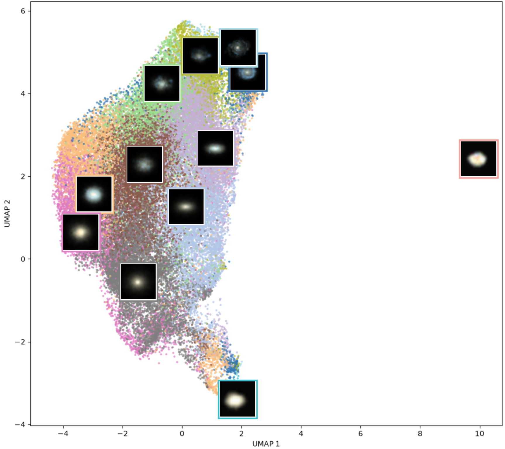
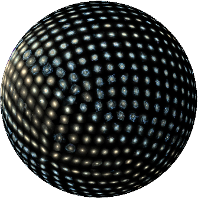
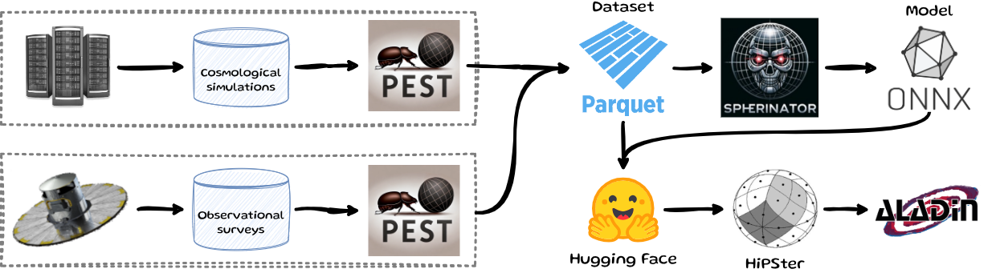
Projected
Generated
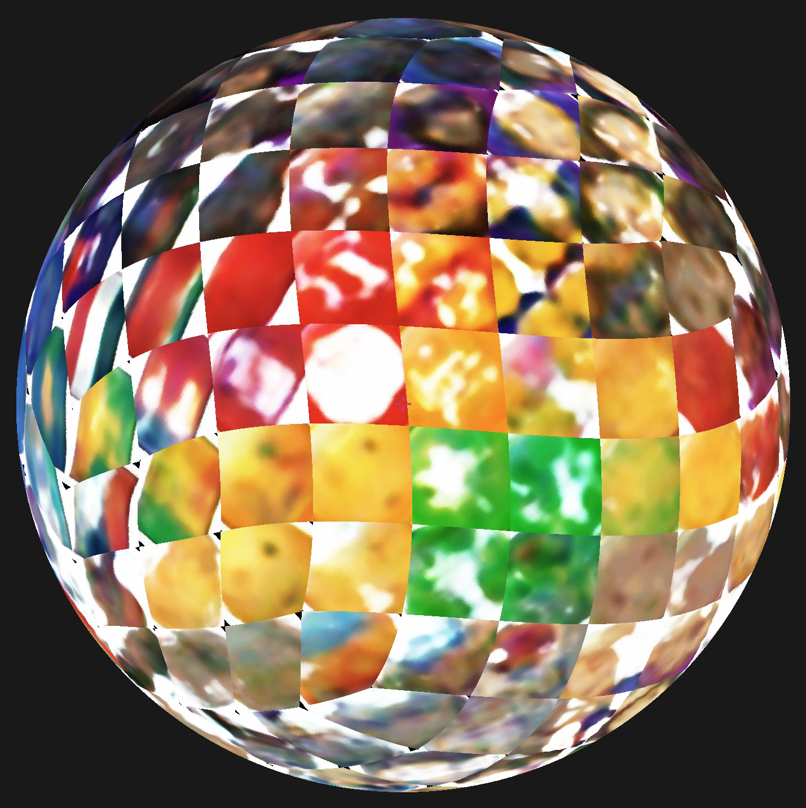
valhalla/emoji-dataset (2,749 emojis)
“Fill the sky with stars”
Largest most uniform all-sky spectrophotometric survey (over 220 million sources)
Doser, Polsterer, and Trujillo-Gomez (2026)
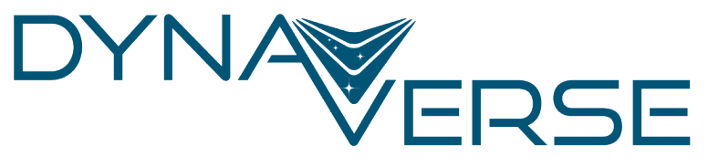
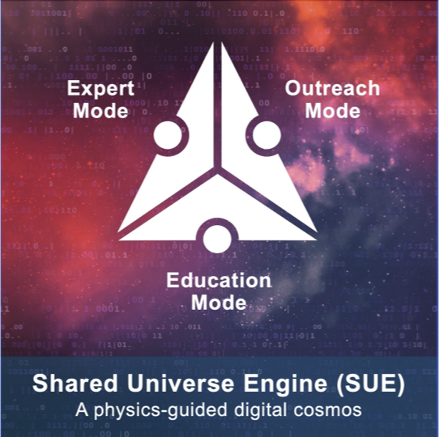
Funded by the European Union. This work has received funding from the European High Performance Computing Joint Undertaking (JU) and Belgium, Czech Republic, France, Germany, Greece, Italy, Norway, and Spain under grant agreement No 101093441.
Views and opinions expressed are however those of the author(s) only and do not necessarily reflect those of the European Union or the European High Performance Computing Joint Undertaking (JU) and Belgium, Czech Republic, France, Germany, Greece, Italy, Norway, and Spain. Neither the European Union nor the granting authority can be held responsible for them.
From Visualization to Knowledge Discovery (B. Doser & S. Trujillo-Gomez)